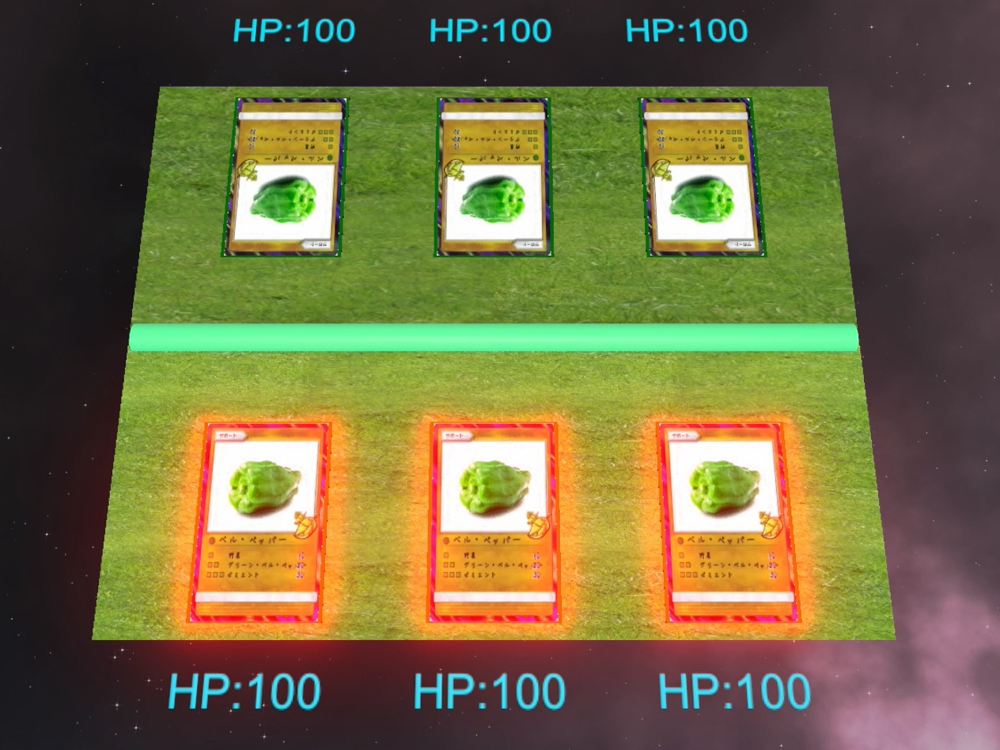
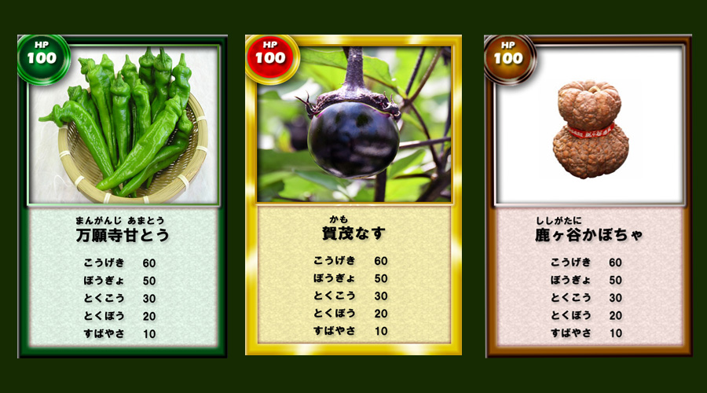

京野菜カードバトルアプリ WEBサイト（仮）

このサイトはGitHub Pagesを利用しています。GitHub使える方であれば誰でも更新できます。
SlackでGitHubのアカウント名を教えていただけたら、コラボレータ（共同編集者）に追加します。
コラボレータに追加されたらメールが届くので承認リンクをクリックすれば完了です。
リポジトリをクローンし、HTMLを編集して、マスターに直接プッシュしてください。
そうするとこのページが更新されます。ご協力よろしくお願いします。
リポジトリはこちら→ https://github.com/MasahiroHayashi/kyoyasai
